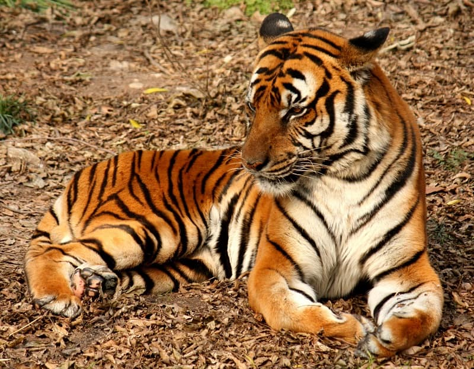

Current Estimated Population: functionally extinct in the wild,
but about 100 or so in captivity
Location: Southeast China – mostly in Hainan Moist Forests
Current Conservation Status: Critically Endangered
Scientific Name: Panthera tigris amoyensis
The South China Tiger has been declared “functionally extinct” in the
wild by scientists, which makes it the rarest tiger species in the
world. While the South China Tiger has not been seen in the wild for
more than 25 years, there are about 100 tigers in captivity and
breeding programs have been ongoing.
Did You Know?
The skull of the South China Tiger is different from all other
surviving tiger species. Because of this, the South China Tiger is
considered to be the original tiger from which all other current
tiger subspecies evolved.
Current Estimated Population: 250 to 340
Location: Southern and central parts of the Malay Peninsula;
southern tip of Thailand
Current Conservation Status: Critically Endangered
Scientific Name: Panthera tigris jacksoni
Until 2004, the Malayan Tiger was classified as the same species as
the Indochina Tiger. However, following a genetic analysis, it was
determined that the Malayan Tiger was its own subspecies and it was
dubbed the Panthera tigris jacksoni, in honor of Peter Jackson, a
famed tiger conservationists.
Did You Know?
In the Malay language, the Malayan Tiger is called harimau, often
shortened to just rimau.
Current Estimated Population: about 350
Location: Myanmar; Thailand; Laos; Vietnam; Cambodia; and
southwestern China
Current Conservation Status: Endangered
Scientific Name: Panthera tigris corbetti
The Indochinese Tiger is native to Myanmar, Thailand, Laos, Vietnam,
Cambodia, and southwestern China. However, scientists believe that the
Indochinese Tiger may be extinct in China as no individuals have been
seen in the area in recent years.
Did You Know?
The Indochinese Tiger’s scientific name, Panthera tigris corbetti,
pays homage to Jim Corbett, a British hunter who took down
man-eating tigers and leopards in India, but later became a
conservationist
Current Estimated Population: 400 to 600
Location: Sumatra, Indonesia (Sundra Islands)
Current Conservation Status: Critically Endangered
Scientific Name: Panthera tigris sumatrae or Panthera tigris
sondaica
The Sumatarn Tiger is the last remaining tiger supspecies in the
Sundra Islands of Indonesia, which used to also be home the Bali and
Javan Tigers – the Bali Tiger went extinct in the 1950s, while the
Javan Tiger was last seen in the 1980s. Sources differ, but it is
estimated that there are between 400 to 600 Sumatran Tigers left in
the wild.
Did You Know?
The Sumatran Tiger is the smallest subspecies of tiger, and also has
the darkest fur (very dark orange) and the highest density of
stripes compared to the other tigers.
Current Estimated Population: 500 to 600
Location: Russian Far East; Northeast China; and possibly North
Korea
Current Conservation Status: Endangered
Scientific Name: Panthera tigris altaica
The Siberian or Amur Tiger is primarily found in the dense forests of
the Russian Far East, but also lives in parts of Northeast China and
possibly North Korea. In the past, the Siberian Tiger’s range was much
larger and could be found throughout the Korean Peninsula, north
China, and Mongolia in addition to the Russian Far East.
Did You Know?
In captivity, the Siberian Tiger is the largest of all the remaining
tiger subspecies, growing as large as 660 pounds (300 kilograms) and
10.75 feet (3.28 meters) long. However, in the wild, the Bengal
Tiger is bigger.
Current Estimated Population: 2,603–3,346
Location: Indian Subcontinent (Bangladesh, Nepal, and Bhutan)
Current Conservation Status: Endangered
Scientific Name: Panthera tigris tigris
When people think about tigers, they’re most likely picturing the
Bengal Tiger, which is not only has the most populous tiger
subspecies, but also represents all tigers. As the tiger subspecies
with the highest numbers, Bengal Tigers are found at zoos and wildlife
parks around the world, and even live shows in Las Vegas. If you’ve
ever seen a tiger in person, it was most likely a Bengal Tiger.
Did You Know?
The reason for the high number (compared to the other tiger
subspecies) of Bengal Tigers is that they have been captive bred
since 1880 and are widely crossbred with other tiger subspecies.